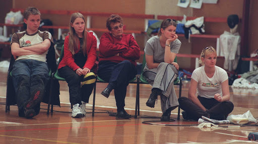

Olga Jekyll was the founder of the United Fencing Club in 1956, and was very actively involved in the Canterbury fencing for over 50 years. She fenced for New Zealand in the Empire (Commonwealth) Games in Auckland, 1950. She was awarded the Queens Service Medal in 1982 for Service to the Community.
Olga was born on 8th October 1918 in Christchurch. As a child she played and was relatively good at several sports including basketball and tennis. She started fencing in 1938 and it became her main sport.
In the 1930’s, foil was the only weapon officially available to women. (Olympics introduced Women’s Epee in 1996 and Women’s Sabre in 2004 ). However in their clubs women often fenced these weapons before the official dates.
She initially fenced at Christchurch Swords Club and University Club, and was selected for the Empire Games in Auckland in 1950 where she came…. She was hoping to be selected for the Olympics in Melbourne 1956, but she was not selected. This prompted her to leave Christchurch Swords Club, and start her own club, United.
Olga left Christchurch Swords and formed United fencing, along with …
